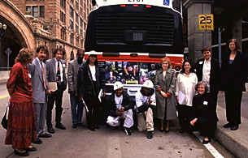

"End of the Line" participants fom left
to right:
Cheryl Engel [Hazelwood Library], Scott Thorburn [TELab, Carnegie Mellon],
Barry Chad [Pa Department, Carnegie Library], Four Representatives from
Youthbuild, Inc., Janet Rosfeld [Ruth Rosfeld's daughter], Lisa Link [Artist,
Project Co-Author], Marge Myers [Assistant Director, STUDIO for Creative
Inquiry, Carnegie Mellon], Carolyn Speranza [Artist, Project Co-Author],
Debra Tomson [Artist Assistant]. |
|
|